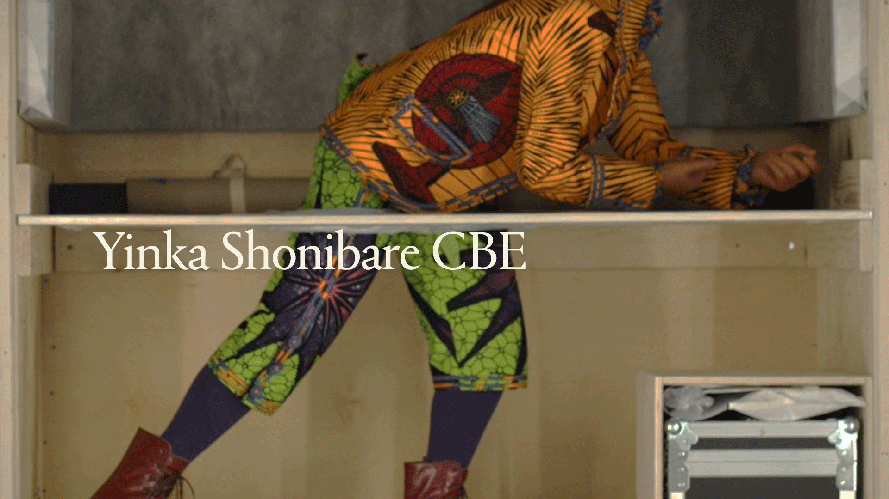
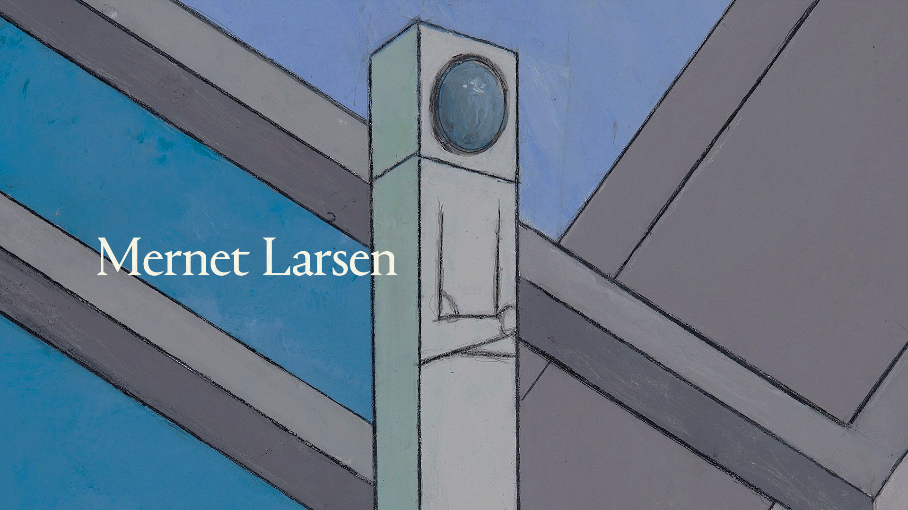

James Cohan Features
Mernet Larsen
James Cohan Features is a series of short documentaries that takes us inside the studios of contemporary artists as they share the inner workings of their art practice and the passions that drive them to create.
Mernet Larsen reveals her unique perspective on creating substitutes for reality in her paintings.